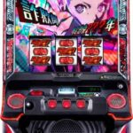
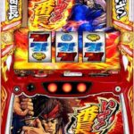
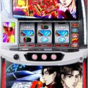
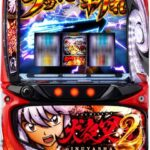
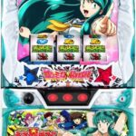
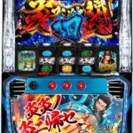
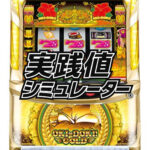

← 資料一覧 あ行 Lアイドルマスター ミリオンライブ! ネクストプロローグ OFF Lアカメが斬る2 OFF  アクダマドライブ OFF アズールレーン THE ANIMATION OFF アニマルスロットドッチ OFF Lありふれた職業で世界最強 OFF  いざ!番長 OFF L痛いのは嫌なので防御力に極振りしたいと思います OFF  L頭文字D 2nd OFF  L犬夜叉2 OFF Lうしおととら白面決戦VH OFF  Lうる星やつら OFF L ULTRAMAN OFF Lウルトラマンティガ OFF Lエウレカセブン４ OFF  L炎炎ノ消防隊 OFF L炎炎ノ消防隊2 OFF S沖ドキゴージャス OFF  S沖ドキGOLD実践値シミュレーター OFF 沖ドキBLACK重視すべき履歴とツール操作 OFF 沖ドキ!DUO アンコール OFF 沖ドキDUO2連跨ぎ狙い OFF S沖ドキBLACK実践値シミュレーター OFF L鬼武者3 OFF 革命機ヴァルヴレイヴ2 OFF ソードアート・オンラインII OFF